I’m Keshika Verma, a student, builder, writer, and someone who
cares deeply about using ideas, technology, and leadership to do meaningful work.
This page is not just a summary of what I have done. It is a window into
who I am, where I come from, what has shaped me, and what I hope to build
going forward.
To God be the Glory.
Who I Am
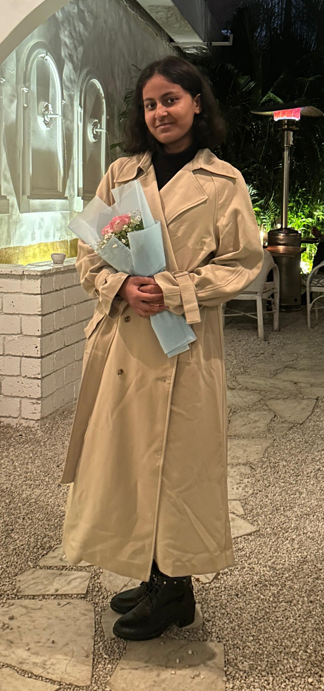
Hi, I’m Keshika. I’m someone who has always been deeply curious,
about people, about the world, about the future, and about how ideas
can actually be turned into things that matter. Over time, that curiosity
found expression through many different forms: coding, writing, public speaking,
leadership, research, education, and social impact work.
I do not see these as separate parts of my life. To me, they are all connected.
Writing helps me think. Technology helps me build. Leadership helps me bring people
together. Service reminds me why any of it matters in the first place.
I am an aspiring computer scientist and writer, but more than that, I am someone
trying to make full use of the opportunities I have, while also creating new ones
for others wherever I can.
Where I Come From
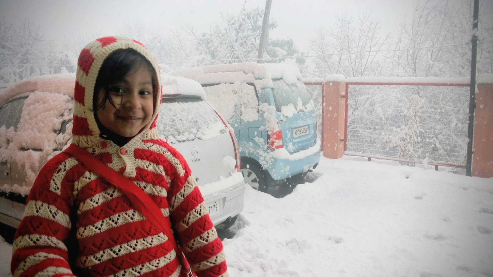
I come from the Himalayan region, and that has shaped me more deeply than I can explain in a single paragraph.
Growing up around mountains gives you a strange combination of grounding and longing. You are constantly
surrounded by beauty, but you also become aware of how unevenly opportunity is distributed.
As a child, I was curious about almost everything. I loved learning, creating, and exploring different interests.
Alongside academics, I was deeply involved in extracurriculars like dancing, singing, painting, and
many other activities that allowed me to express myself creatively. Dance, in particular, was something I loved
intensely. It was a space where energy, discipline, and joy came together. Those experiences made me an
all-rounder in many ways, someone who enjoyed growing through both intellectual and creative pursuits.
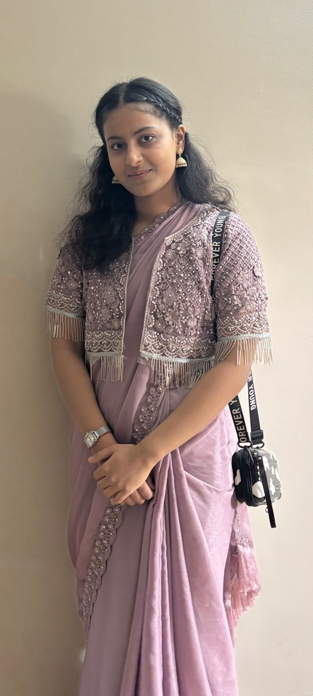
At the same time, computers fascinated me. They felt like windows into another world. While I was exploring
creative activities, I was also increasingly drawn toward technology and programming. But access was limited,
and advanced exposure to technology was not something that naturally existed around me. So I began learning
in the way many deeply curious people do, piece by piece, from whatever I could find. I explored free resources,
tutorials, ideas, and slowly began teaching myself what I could.
That journey taught me two things very early: first, that curiosity can travel farther than circumstance; and second,
that access changes lives. Both of those truths still guide me.
Growth
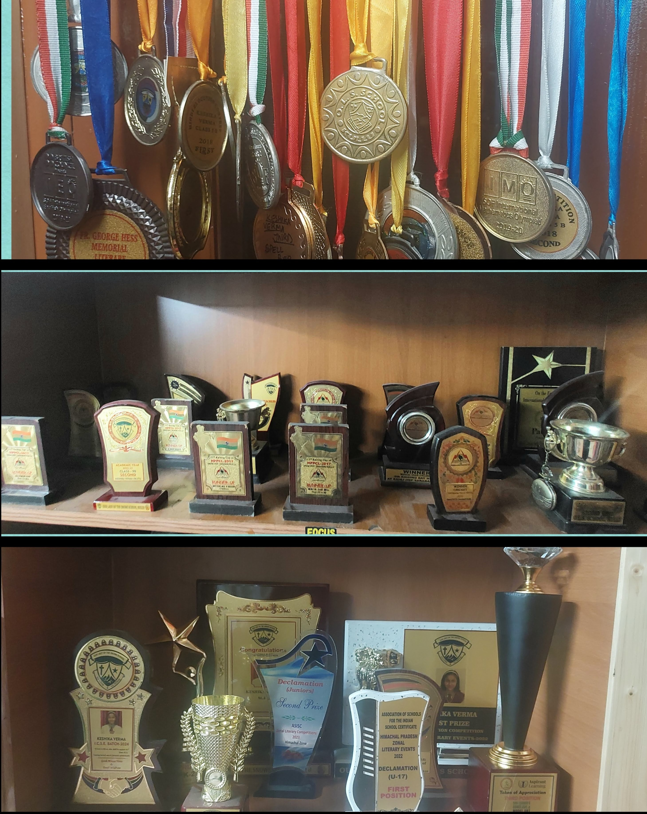
My journey did not happen all at once. It unfolded step by step, often in ways I did not fully understand at the time.
The first moment that made me believe in my academic potential came in Grade 7, when I stood first in my class
for the first time. It was a small milestone, but it gave me confidence that consistent effort could truly change outcomes.
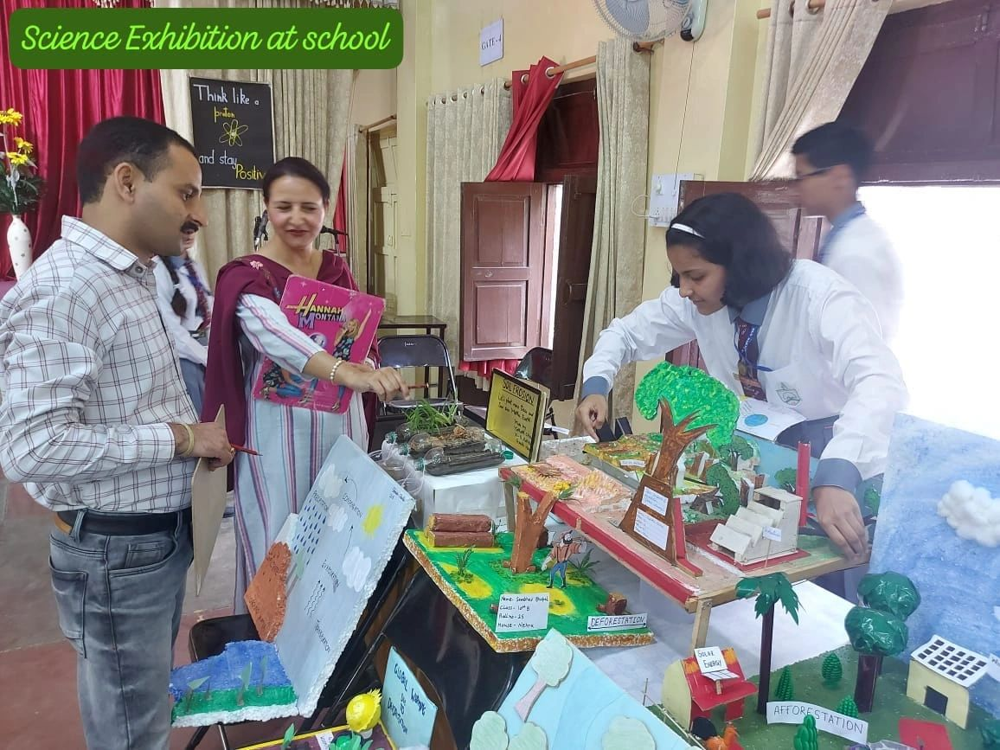
Presenting my project at the school science exhibition.
Soon after, the world changed. The pandemic and lockdown disrupted the rhythm of everyday life for everyone.
But instead of slowing down, that period became a time of exploration and growth for me. With more time to learn
independently, I began developing new skills, discovering new interests, and pushing myself further than I had before.
Over time, I also developed a deep love for reading and writing. Books became more than stories to me. They became
worlds, ideas, and possibilities. By the time I was in Grade 8, at just twelve years old, I had started writing
my own novel. That early project was the beginning of my journey as a writer. I ultimately published
The Last Enemy: One World - One Fate in Grade 12.
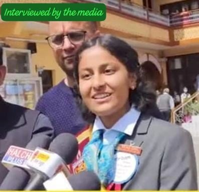
Interviewed by the local media.
At the same time, I remained deeply involved in creative activities like dancing, which had always been an important
part of my life. Creativity, academics, and curiosity were all growing together during those years.
During this period, I also became increasingly interested in computer science. My brother was already working in the field,
and being around that environment helped me understand the possibilities technology offered. Naturally, I began exploring
programming myself and even started Harvard’s CS50x course, where I spent many hours learning and experimenting with code.
Alongside these interests, leadership also became an important part of my school life. I served as
Vice Head Girl in Grade 9 and later as Head Girl in Grade 10, roles that allowed me
to represent my peers and contribute to the school community in meaningful ways.
Public speaking and literature were also areas where I found great joy. I represented my school three times at the
ASISC literary events in Grades 8, 9, and 10, winning a prize each time. In Grade 8, I advanced to the regional
level and secured third place in North India. In Grade 9, I placed first in my state and again
represented my region at the North India level. In Grade 10, I secured second place in the state.
I also won a laptop in a speaking competition organized by Byju’s.
Academically, I continued to perform strongly across subjects and often ranked first in various school quizzes and academic
competitions. In my Grade 10 ICSE board examinations, I secured 96.4%, standing first in my school
and likely becoming the city topper as well.
3x winner of the ASISC Literary Events.City topper in Class 10 ICSE Board Examinations and school History and Civics topper.
That year was particularly meaningful for many reasons. I had the opportunity to host a major cultural event attended by
over 1,950 people at Atal Sadan, Kullu-Manali, an experience that strengthened my confidence and love for being on stage.
In recognition of my overall performance in academics, leadership, and extracurricular activities, I was awarded the
Neon Dhairya Sharma Award, the highest honor given by my school and its equivalent of the
Student of the Year award. I received it alongside my proud parents, a moment I will always remember.
Winner of the Neon Award.
During the same period, I was also crowned Miss OLS at my school,
Our Lady of the Snows High School, an award that recognized not just academic and extracurricular
achievements, but also overall participation and presence within the school community.
Looking back, those years were not just about achievements. They were about discovering who I was becoming,
someone who loved learning, creating, leading, and constantly growing.
I Moved to Chandigarh in 2024
In 2024, I moved to Chandigarh to begin a new chapter of my education, and almost immediately,
my life began changing in ways I had never expected.
Within the first two weeks of joining the school, I was appointed Disaster Management In-Charge,
a responsibility that required coordination, preparedness, and leadership in critical situations. Around the same time,
I also joined the National Service Scheme (NSS) as a volunteer, where I began engaging in community service
initiatives and learning the importance of social responsibility.
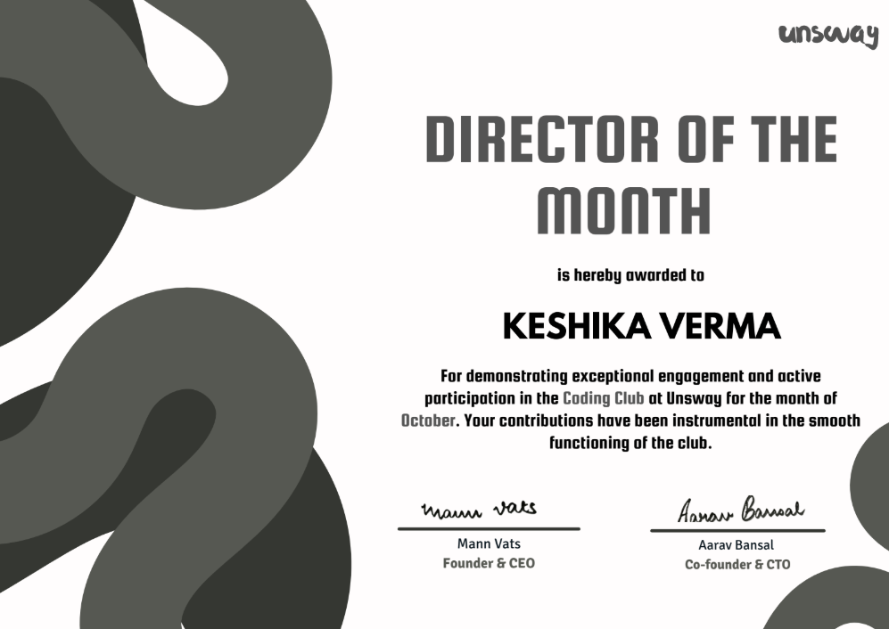
Director of the Month at Unsway.
What started as a new environment soon became a year full of exploration. I began taking up online internships to challenge
myself beyond the classroom. I joined Unsway, where I initially served as an Outreach Coordinator
for the Coding Club. Over the span of several months, my work and dedication led to multiple recognitions, including
Employee of the Month awards, and I was eventually promoted to become the Director of the Coding Club.
During this time, I also worked as a Creative Content Writer at Saarthi: My Mental Health Companion,
contributing to initiatives aimed at spreading awareness and support around mental health.
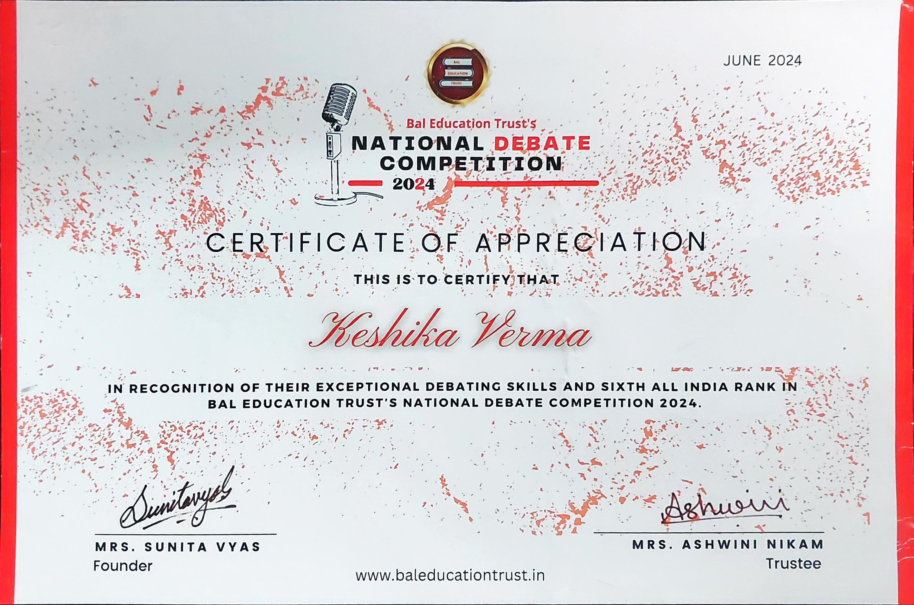
Winner of a national debate competition.
That year also brought some remarkable academic and leadership opportunities. I secured All India Rank 6
in the Bal Education Trust National Debate Competition, an experience that strengthened my love for public speaking
and critical thinking.
Around the same time, I helped organize SHS MUN and the Leaders Conclave, one of the largest student
conferences in North India. Hosted at St. John’s High School, Chandigarh, the conference brought together
over 1,000 delegates for the Model United Nations and more than 300 participants for the Leaders Conclave,
representing 10+ cities across the region. I served as a compère and
Assistant Head of Department, helping coordinate and lead the event while managing large-scale logistics
and discussions across multiple committees.
Host of SHSMUN 2025, the second-largest MUN in North India.
Another important milestone that year was being selected as a Peer Educator under the
Adolescent Peer Educators Leadership Program, an initiative run by the Ministry of Education in collaboration with
the Central Board of Secondary Education (CBSE). This role allowed me to work closely with students,
spreading awareness about well-being, health, and personal development while helping create a supportive environment within the school.
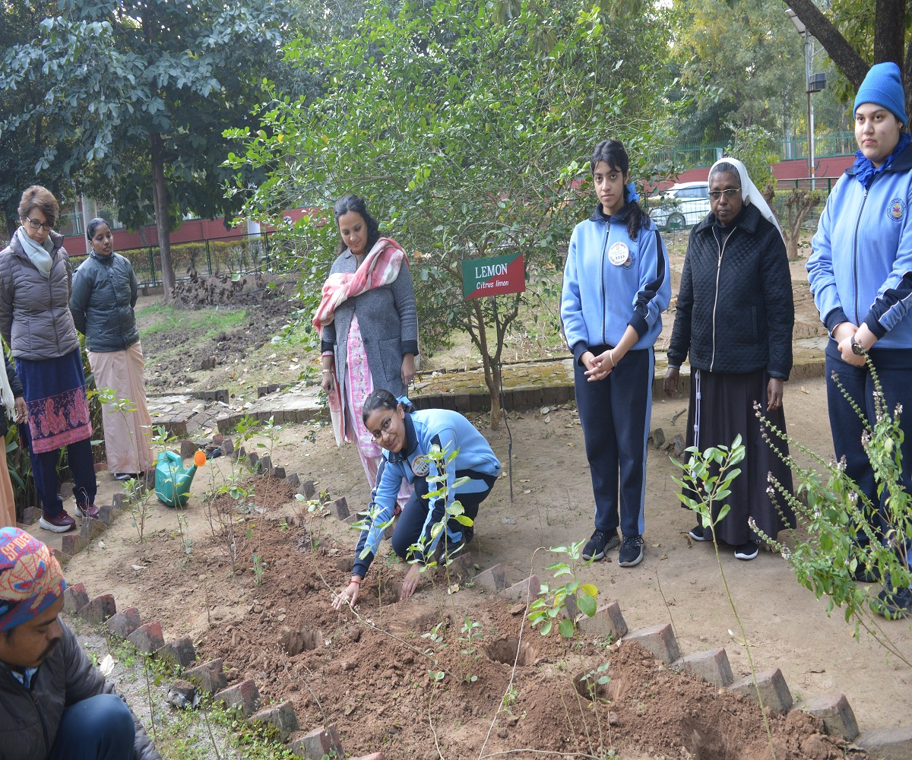
Peer Educator, leading a plantation drive.
However, Grade 11 was not only a year of achievements. It was also a year of intense personal struggle.
During this time, I went through one of the most difficult mental health phases of my life. I was dealing with severe anxiety,
frequent panic attacks, and a period of depression that deeply affected my ability to function the way I normally would.
The pressure of a new city, new expectations, and constant responsibility often felt overwhelming.
Honoured at SHS Leaders Conclave after delivering a ted talk on mental health struggles.
But rather than hiding these struggles, I chose to confront them openly.
At the SHS Leaders Conclave, I delivered a mock TED-style talk where I spoke about the challenges I was
experiencing and the ways I was trying to work through them. I shared the coping mechanisms I was learning, the habits
I was building, and the importance of acknowledging mental health struggles rather than ignoring them. Speaking about it
publicly was both difficult and empowering, and it became an important moment in my personal journey.
Later that year, in December, I experienced what became one of the most transformative experiences of my life.
I was selected to attend a seven-day residential bootcamp at the Indian Institute of Technology (IIT) Delhi,
organized by The Tale of Humankind. Living and learning on the IIT campus for a week exposed me to an incredible
environment of innovation, collaboration, and creative problem solving.
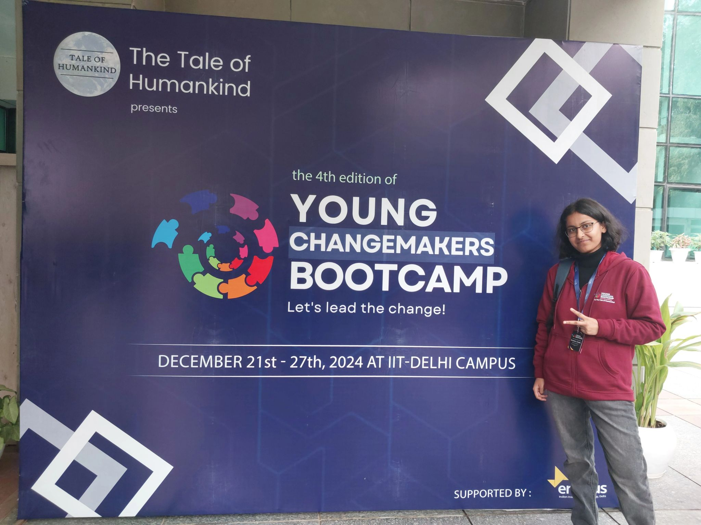
Young Changemaker's Bootcamp at IIT Delhi.
During the bootcamp, I worked with a team to develop two AI-based assistive technology prototypes:
1. WaveSync, designed as assistive technology for individuals with hearing impairments
2. Optipulse, an assistive solution aimed at supporting visually impaired individuals
The experience pushed me to think about how technology can be used not just to innovate, but to create solutions that
genuinely improve people’s lives.
Another personal milestone during this year was building my very first website using HTML and CSS.
One of the first designs of this website.
It was my first real step into web development and the beginning of a much deeper interest in technology and digital creation.
Looking back, Grade 11 was not simply a year of accomplishments or setbacks. It was a year that tested my resilience,
pushed me out of my comfort zone, and forced me to grow emotionally, intellectually, and personally.
It was the year I learned that growth is rarely linear, and that sometimes the hardest years shape you the most.
12th, The Most Happening Year of My Life
Grade 12 became the most intense and defining year of my life. I entered the year carrying the same mental health
struggles that had begun earlier. Anxiety, panic attacks, and overwhelming emotional pressure were constant companions.
I was undergoing therapy, trying to understand and manage what I was experiencing, but progress was slow and often frustrating.
There were many moments when simply focusing on everyday life felt extremely difficult.
Discipline Executive, fourth from the left.
Yet despite this internal battle, life outside continued to move forward in remarkable ways. Because of the work I had done
during Grade 11, I was appointed as the Discipline Executive of the school, one of the most respected and selective
leadership positions in the senior cabinet. What made the moment even more surprising was that I had joined the school only
a year earlier. Being entrusted with such responsibility so quickly was both humbling and deeply motivating.
My debut novel.
During this time, I also reached a milestone that had been years in the making. On 25 March 2025,
I finally published my first novel, a science fiction book I had begun writing in Grade 8. The journey to publication had
not been linear. There were pauses during my board examinations and again during the difficult period in Grade 11,
but the story stayed with me throughout those years. When the book was released, it received an incredible response
and secured Rank #2 in the Kindle Bookstore in the Science Fiction category within the first week.
Seeing a dream that began at age twelve become real was one of the most surreal moments of my life.
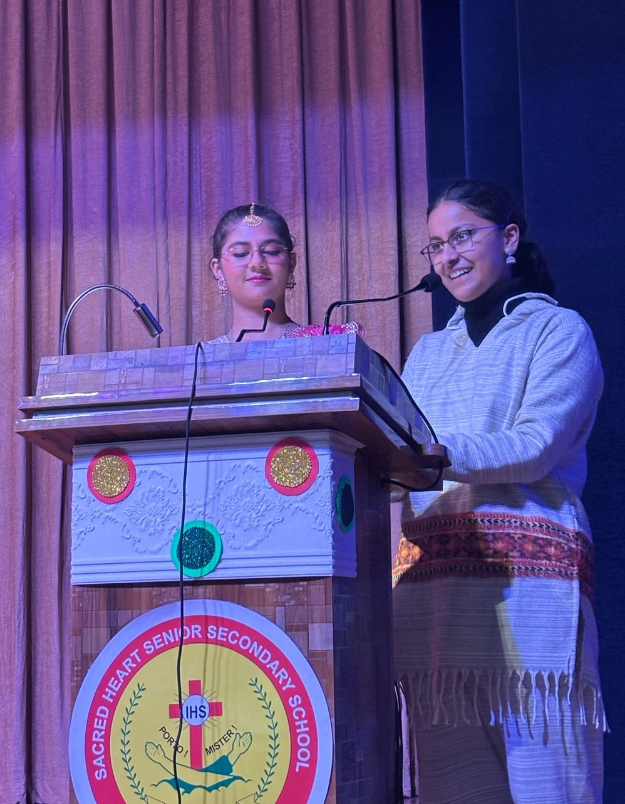
At the same time, I continued exploring research and technology. Inspired by the recurring floods in my home region in Himachal Pradesh,
I conducted independent research on Automation of Spillway Gates of Dams and Barrages. The project proposed an
automated system capable of monitoring reservoir levels and adjusting spillway gates in real time to prevent panic-driven
decisions during flooding seasons. The research was later presented to the Himachal Pradesh Power Corporation Limited,
which appreciated the concept and expressed interest in exploring such automation in the future. The project was deeply
personal to me because the floods had affected my own community in the Himalayas.
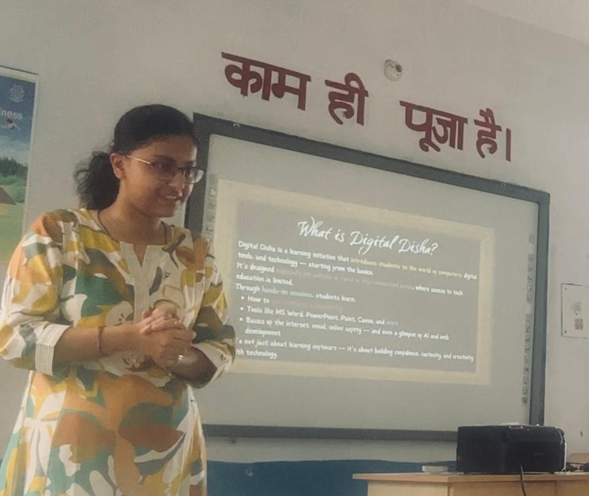
Digital Disha, the digital literacy program.
While working on this research, I also began studying broader questions around climate action and sustainability.
Understanding the relationship between environmental systems, infrastructure, and technology became a growing interest,
and it shaped the way I began thinking about the role of innovation in solving real-world problems.
The first batch of my digital literacy program, Digital Disha.
Another initiative that meant a great deal to me was the launch of the Digital Disha Program.
After months of planning, I conducted the first cohort of this digital literacy initiative in a government school
in the Himalayan region. The program was designed to introduce students in rural communities to computers, digital tools,
and the broader possibilities of technology. Initially, there was significant resistance because many families were unfamiliar
with computers and hesitant to adopt new technologies. Through conversations, demonstrations, and patience, I was able to run
the program successfully, helping students take their first steps into the digital world.
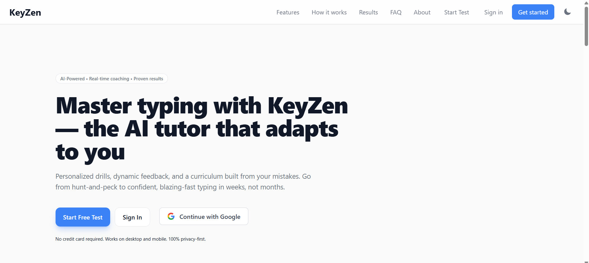
My startup, KeyZen, one of the first web pages.
While working with students during Digital Disha, I realized that many of them struggled with something very basic, typing.
This observation eventually led me to begin working on a startup idea. I became the Co-founder and COO of KeyZen,
an AI-powered typing tutor designed to help users improve typing speed and accuracy through personalized drills,
real-time coaching, and performance analytics.
Dr. Kiran Bedi praising Digital Disha.
During the same period, I also had the opportunity to interact with Dr. Kiran Bedi, India’s first woman IPS officer
and former Lieutenant Governor of Puducherry. I shared my experience with Digital Disha and the challenges of bringing technology
awareness to rural communities. Hearing her encouragement for the initiative was incredibly inspiring and reinforced my belief that
meaningful change often begins with small, determined steps.
Presenting my team’s ideas at Viksit Bharat Young Leaders Dialogue.
Another major milestone came when I was selected to participate in the Viksit Bharat Young Leaders Dialogue (VBYLD) 2026
at Bharat Mandapam, New Delhi. The selection process involved a rigorous four-stage evaluation, a national quiz,
an essay round, a presentation submission, and a final interview. Being chosen to represent Chandigarh through this
process was a proud moment. The event itself was extraordinary, as I had the rare opportunity to witness and attend a session with the
Prime Minister of India alongside other young leaders from across the country.
My team with Mr. Anand Kumar, founder of Super 30.
Even during the most stressful moments, curiosity never left me. In my free time, I explored concepts in electronics and physics,
eventually building a full-wave rectifier circuit from scratch. Small experiments like these kept reminding me why I loved
learning in the first place.
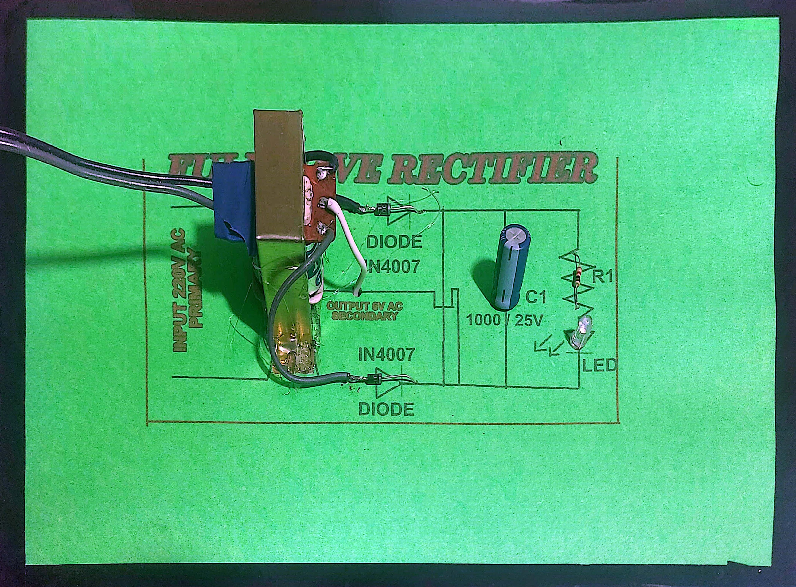
Built a full-wave rectifier out of interest.
However, this year was also marked by a deeply personal loss. My grandfather passed away during this time, and his death affected
me profoundly. I was already navigating significant mental health challenges, and losing someone so close to me intensified those emotions.
It was one of the hardest periods of my life.
Despite everything happening internally and externally, I continued moving forward, applying to universities in Canada
and the United States, completing projects, leading initiatives, and preparing for the next stage of my life.
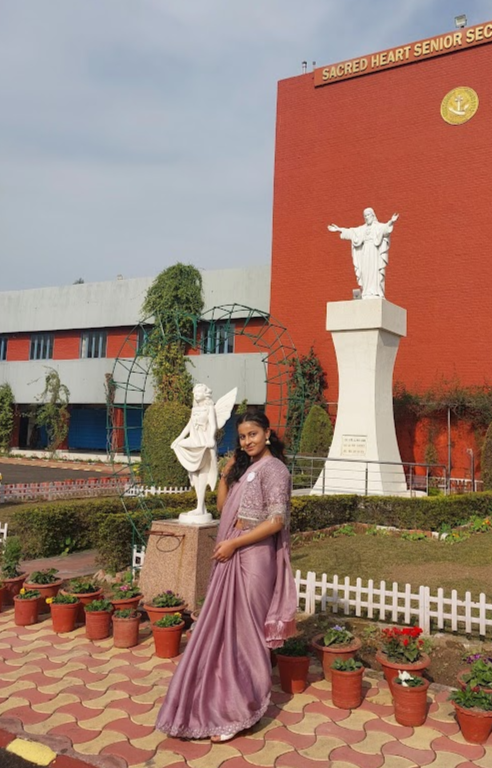
School farewell.
My school farewell took place on 31 January, marking the symbolic end of my school journey
(I got crowned Ms. Erudite ❤️), and my final board examination was on 7 April.
With that final paper, one of the most eventful and transformative chapters of my life came to a close.
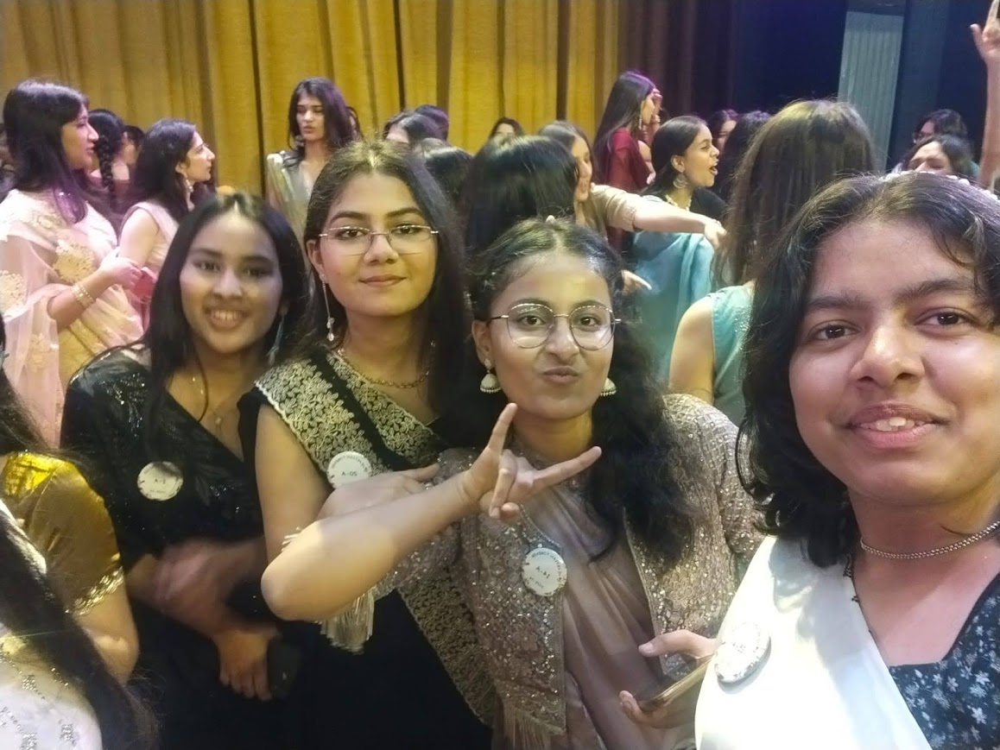
Ending the year with people I love.
Looking back, Grade 12 was not simply a year of achievements. It was a year that tested my resilience,
deepened my empathy, and forced me to grow stronger than I had ever imagined.
The end of school life. 16 years old. I loved it ❤️
What Drives Me
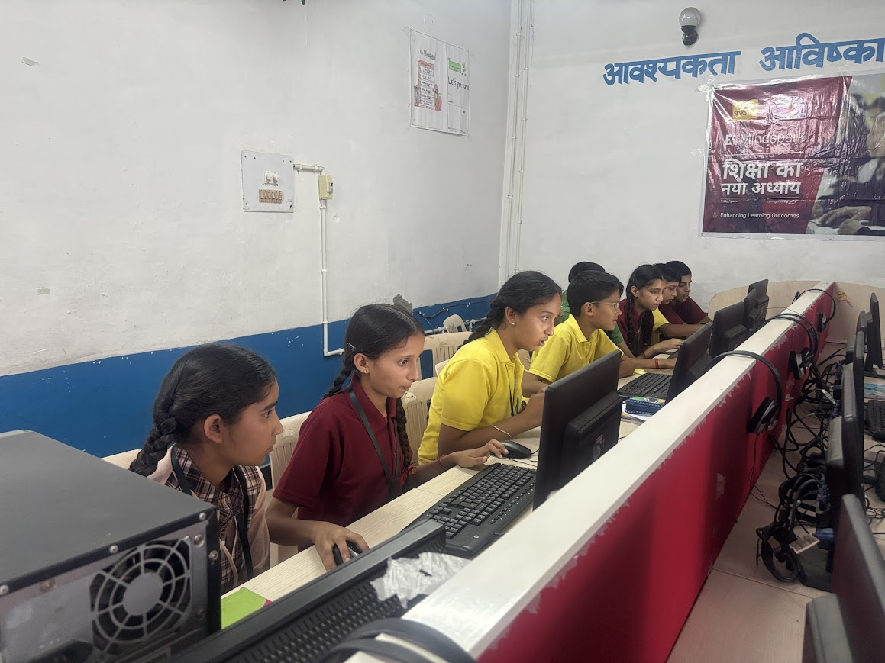
Digital Disha students, first batch.
What drives me most is the desire to grow meaningfully and contribute meaningfully.
I care about building things that are not just impressive, but genuinely useful, whether that is through
technology, education, leadership, or creativity.
I am also deeply shaped by struggle and reflection. Working through anxiety and intense pressure changed
the way I see success, ambition, and people.
It made me more self-aware, more resilient, and more empathetic, and reminded me that real achievement
should never come at the cost of losing yourself.
What I’m Building Now
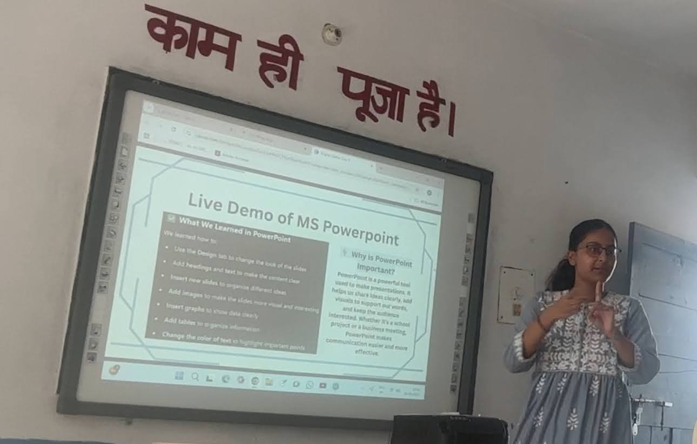
Digital Disha first cohort, students learning PowerPoint.
Right now, I am focused on building things that connect technology with real human impact.
Through Digital Disha, I work to make digital literacy more accessible for students in rural
and less connected communities.
I am also building KeyZen, an AI-powered typing tutor inspired by a simple but important gap
I noticed while teaching: digital opportunity begins with digital fluency.
Alongside that, I continue to write, explore ideas, and grow into the kind of builder and thinker
I hope to become.
Recommendations
Along my journey, I have been fortunate to learn from and work with
teachers, mentors, collaborators, and leaders who have supported my
growth and believed in my work.
Some of them have shared kind words and recommendations about my work,
leadership, and initiatives. Their perspectives mean a great deal to me.